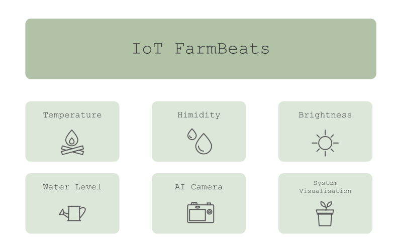

Design Principles
We centred our focus on the following design principles when designing our UI for the project. Achieving satisfactory user experience is priority for us and we want our product to be reliable, useful, and easy to use.
Simplicity
To keep the design simple, we have decided to only have two main pages: the option menu page with each button labelled with a subsystem, or extra feature that will lead to a profile page. Only necessary frames and sections are added to reduce complexity.
Consistency
The following has been implemented in our UI:
- All texts use the same font
- All title texts have the same size.
- All texts have the same colour.
- The buttons for the menu page have the same style sketches and sizes.
- The frames for each subsection are all rectangles and follow the same colour scheme with consistent padding.
- All profile pages for each subsystem have the same structure.
Visibility and Clarity
To ensure visibility and clarity, the following has been taken into consideration:
- if the text colour is dark, then the background colour is light and vice versa.
- child frame and parent frame have contrasting backgrounds to distinguish separate sections.
- buttons are big enough with clear labels.
Feedback
We want the user to inform the user that their inputs have been addressed correctly by the system. This is achieved by ensuring the correct page appears when a button is pressed:
- Click button from option page to a specific profile page.
- Click home button to navigate from profile page back to home page.
Tolerance
Since the UI carries out minimal, simple functionality to meet all requirements, it is difficult for users to make mistakes: the only user input required is to open the application and click the profile of a factor they want to observe. Therefore, the simplicity of the UI also strengthens UI tolerance.
Reuse
The reuse of profile page template - with value, graph, scale, and suggestion display - allows each subsystem profile to have a consistent view. This helps increase user familiarity with the interface as well as allowing implementation to be more efficient and concise.
These principles and concepts are based on the following references: [1]
Hand Drawn Sketches
The sketches below demonstrate our initial ideas on how the UI should look based on the requirements we have gathered, taking all design principles into account:
After showing the sketches with our client, he mentioned we could also add a graph to show sensor value against time. This extra feature is added in our prototype below.
Prototyping with Proto.io
Based on the sketch, we used [proto.io](http://proto.io) to implement the prototype for our GUI. We changed the colour scheme to be based around green since our project is very centred on plants. Here is what the option home page should look like. This is the first page that appears when the user opens the application:
If the user clicks the brightness button, it should lead them to the brightness profile page. This page includes three main frames: the sensor, the actuator and the suggestion frame. Within the sensor frame, there should be a section showing current average sensor value, a scale indicating current farm profile status with the brightness factor, and a button that allows the user to view graph. For the scale, green indicates optimal, amber indicates moderately good, and red indicates bad current farm condition. If the arrow points at read, the suggestion should give a message to advice user what could be done to improve.
Below shows the page when ‘View Graph’ is pressed. The actuator and suggestion frames should remain the same. The graph should be animated and updated every 5 seconds to show live data from database.
We also created a prototype for one of our Could-have requirements on the AI camera. There should be one frame showing camera view and another on information that could help user gain more insight to plant health and monitor the result of system performance on optimising plant growth.
References
[1] "6 Principles of User Interface Design," [Online]. Available: https://uiuxdesignguide.com/6-principles-of-user-interface-design/